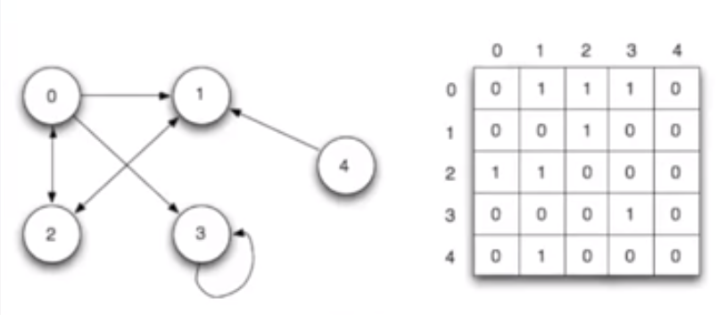

Check console

const matrix = [
[0, 1, 1, 1, 0],
[0, 0, 1, 0, 0],
[1, 1, 0, 0, 0],
[0, 0, 0, 1, 0],
[0, 1, 0, 0, 0]
]
const breadthFirstSearch = new BreadthFirstSearch(matrix, 1)
console.log('---- Matrix')
console.table(matrix)
breadthFirstSearch.print()
class BreadthFirstSearch {
constructor (graph, root) {
this.graph = graph
this.root = root
this.nodesLen = []
this.queue = [this.root]
this.initiateValues()
}
initiateValues () {
for (let i = 0; i < this.graph.length; i++) {
this.nodesLen[i] = Infinity
}
this.nodesLen[this.root] = 0
}
search () {
while (this.queue.length !== 0) {
const current = this.queue.shift()
const currentConnected = this.graph[current]
const neighborIdx = []
let idx = currentConnected.indexOf(1)
while (idx !== -1) {
neighborIdx.push(idx)
idx = currentConnected.indexOf(1, idx + 1)
}
for (let i = 0; i < neighborIdx.length; i++) {
if (this.nodesLen[neighborIdx[i]] === Infinity) {
this.nodesLen[neighborIdx[i]] = this.nodesLen[current] + 1
this.queue.push(neighborIdx[i])
}
}
}
return this.nodesLen
}
print () {
const values = this.search()
console.table(values)
}
}